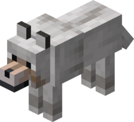

Wolf Biom Forest, Tundra and Taiga Hp 8 Can Eat All meat and bones Tames with Bone Interacts with Boats, minecarts and lead Interations with objects Boats, minecarts and leashes Drops Nothing Network ID 95 Technical name minecraft:wolf 